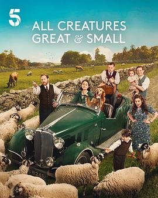

9.5
万物生灵 第六季
All Creatures Great and Small Season 6
2025
英国
评分 9.5
导演:
安迪·海伊
演员:
尼古拉斯·瑞夫 / 萨缪尔·韦斯特 / 蕾切尔·申顿 / 安娜·梅德利 / 卡勒姆·伍德豪斯 / 派翠西亚·霍吉 / 托尼·皮茨
类型:
剧情,喜剧
剧情简介
1945年的英格兰，战火的硝烟终于散去，但约克郡山谷的生活仍在延续着细小而温柔的波澜。詹姆斯（尼古拉斯·瑞夫饰）回到达罗比，与妻子海伦（蕾切尔·申顿饰）一同重新经营那间熟悉的兽医诊所。战后的宁静带着一种陌生的空洞——老朋友有的归来，有的永远留在异乡，而动物与人之间的羁绊，成了他们疗愈失落的唯一方式。这一季的故事更显成熟与深情。西格弗里德（萨缪尔·韦斯特饰）试图用幽默掩盖内心的悲伤，他在新一代年轻兽医面前，依然保持着固执与慈爱；崔斯坦的身影虽然缺席，却在每一次对话中被怀念。海伦在家庭与工作的平衡中学会了坚强，而詹姆斯则在一次次救治与离别之间，重新理解了生命的意义。导演安迪·海伊用温暖的镜头语言继续描绘这片令人心安的乡野：青草地上的晨雾、石桥下的溪流、羊群的咩叫声、马蹄敲击山路的回响——每一帧都像时间的抚摸。配乐依旧柔和，叙事节奏舒缓而真挚，仿佛在提醒观众：最深刻的感动往往来自最平凡的日常。《万物生灵 第六季》不再是单纯的田园故事，而是一首写给“重建与希望”的抒情诗。它展现了战后人们重新面对生活的勇气，以及人与动物之间那种无言的相互救赎。即便外界动荡、命运无常，温情与善意依旧可以在这片山谷里生长。这部剧继续延续了原著的精神——用微小的细节描绘伟大的情感，用动物的眼睛折射出人类的柔软与坚持。每一个病患、每一声告别、每一次拯救，都是生命继续前行的证明。